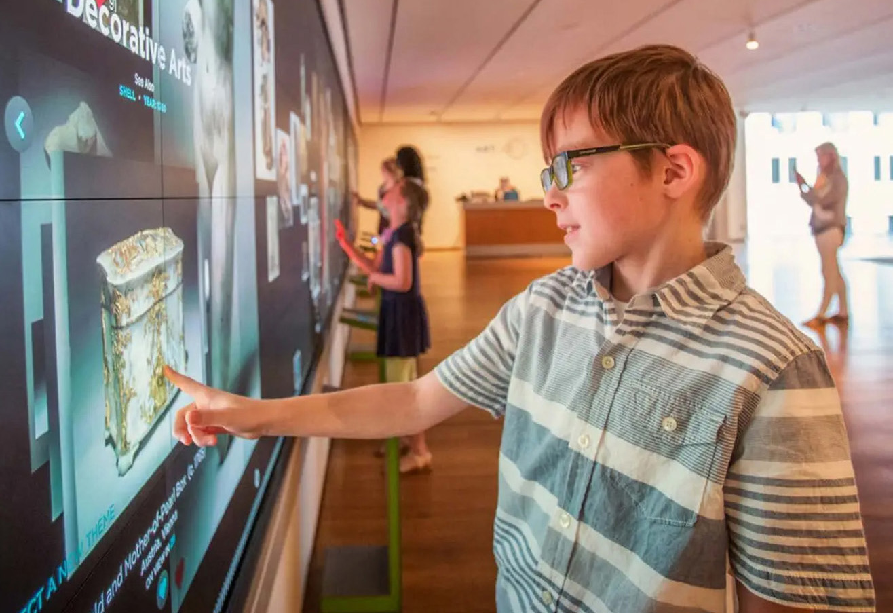
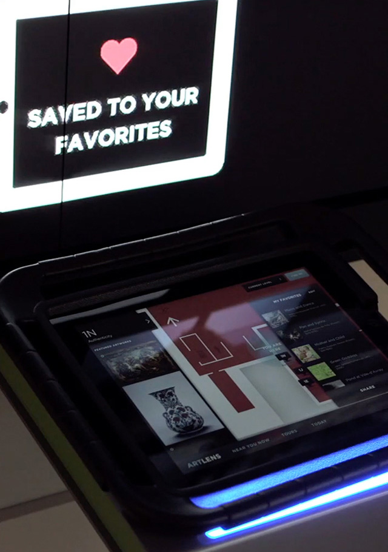
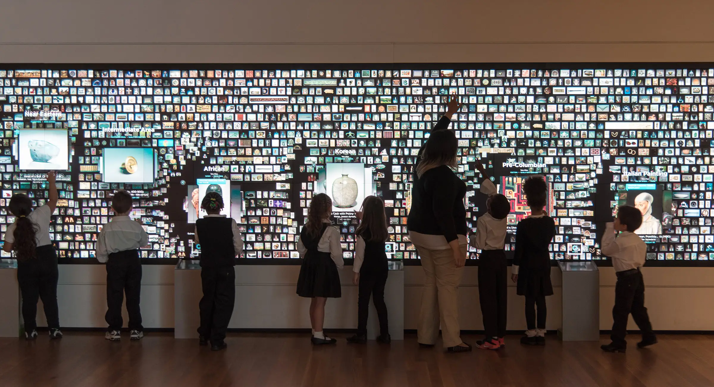
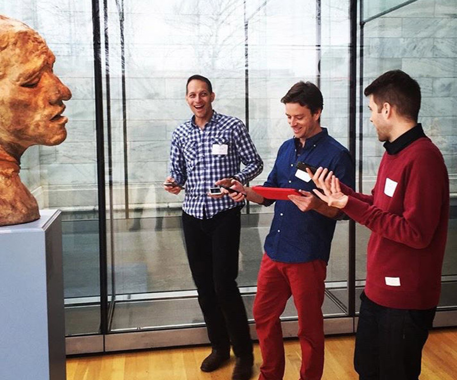
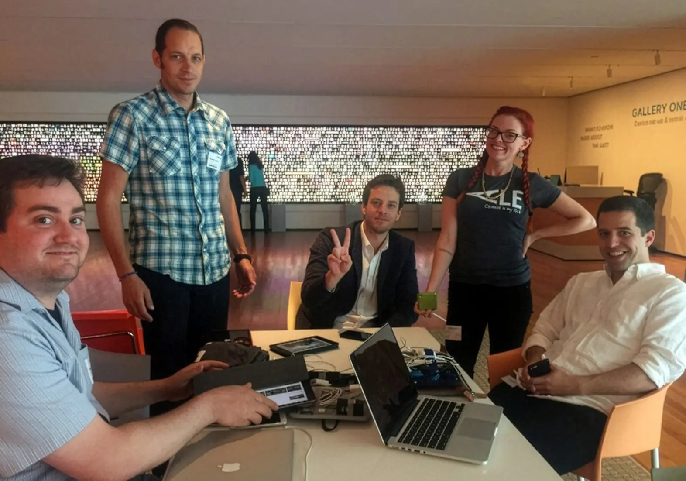

Cleveland Museum of Art
Cleveland, USA
Gallery One reimagined how visitors encounter a museum collection. At its centre was the Collection Wall—a 40-foot interactive display presenting thousands of artworks from the Cleveland Museum of Art’s collection and inviting visitors to browse, compare, and explore through touch.
While at Local Projects, I worked on the design and development of ArtLens 2.0, the museum’s mobile and iPad application that extended this experience beyond the wall and into the galleries.

The app allowed visitors to save artworks directly from the Collection Wall and build a personalised pathway through the museum. Instead of following a prescribed route or historical sequence, visitors could begin with what caught their eye and navigate the building according to their own interests.

A key focus of the work was designing the connection between the large-scale gallery interface and the personal device. ArtLens translated the playful browsing of the Collection Wall into a practical tool for moving through the museum—showing nearby works, helping visitors locate them in the building, and assembling custom tours drawn from their saved selections.

Testing ArtLens 2.0 on site with the project team.


Installation on site with Local Projects and Cleveland Museum of Art team.
Together, Gallery One and ArtLens reframed the museum visit as something participatory rather than prescriptive. Visitors could explore the collection through digital play, then carry their own curated path into the galleries and encounter the artworks face-to-face.